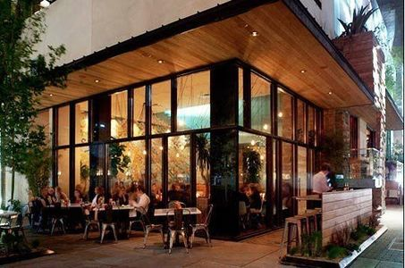

There are no short cuts when it comes to our passion. We pull out all the stops, giving you the ‘wow’ flavour, experience and consistency you not only want, but deserve. Our customers keep coming back, again, again, and again.
About
Our Restaurant
We’re an Italian pizza restaurant located downtown in Okotoks, Alberta, committed to serving hardworking individuals, just like yourself. When we’re not scouring the globe (okay, the prairies) for the freshest, ripest and boldest ingredients, we’re crafting new additions to our menu for you and your colleagues to enjoy.
From Margherita pizzas and Fettuccine Alfredos to Anipasto Skewers and Aperitivos, everything at Okotoks Pizza is made to provide you with an abundant amount of options to choose from – leaving you to think about what you’re going to try next!
![Okotoks Pizza Restaurant's exterior design from a front view perspective. It has two large glass windows and a glass door leading to the entrance of restaurant. The two glass windows and the glass door have three black window hoods with the second glass window having a black window hood with the word 'Pizzeria' in a white, sans-seif font. In between the two glass windows and the second glass window and the glass door is a green ficus tree plant. There is also a light-brown, wooden bench at the front of the first glass window. Through the glass windows, there are incandescent light bulbs hanging from the ceiling and customers are eating and talking to the people seated at their table.](../images/restaurant/restaurantImage1.jpg)

![Okotoks Pizza Restaurant's interior design from a front view perspective. This is the bar area where behind the counter, there is a black wood-fired oven on the left-hand side and a wall mounted wine racks with green glass bottles on the left-hand side. Ceramic plates are also placed and stacked underneath the wall mounted wine rack. At the front of the bar area, there is a wall divider near the right-side and both the wall divider and counter have a grey, grantite texture. Three incandescent light bulb are hanging from the ceiling near the left-hand side and the chairs at the bar area are five dark red and have a leather texture.](../images/restaurant/restaurantImage3.jpg)
![Okotoks Pizza Restaurant's interior design from a rear-view perspective. This is a photograph of the whole dining area where the bar area is located in the front area with modern paintings displayed on the left-hand side of the wall. There are three chandliers where each chandlier has six small incandescent light bulbs hanging from the ceiling. In the dining area, there are a total of eight tables with four grey, leather chairs at each table. On each table, there are four small plates, four wine glasses, two small beer glasses, one olive oil dispenser in the center of the table and four light blue cloth napkins with two different sized forks on the left side of the napkin and a butter knife on the right side of the napkin. There are also three pillars aligned in the center of the dining room.](../images/restaurant/restaurantImage4.jpg)

The Story of Okotoks Pizza
After watching his parents run a very successful pizza business in Calgary, Matt Cleveland learned how to make people happy, one topping at a time. Opening the doors to Okotoks Pizza in 2004, Matt has managed to evolve the fresh, traditional Italian-style pizza his family perfected back in the mid 80s to a more modern and convenient comfort food for today’s professionals on the go.
Okotoks Pizza's pizzas are made with only the freshest ingredients like mozzarella, roma tomatoes, made-from-scratch sauce and even features premium toppings like Sorriso Pepperoni, salami from Valbella meats and a healthy Flax crust. You feel good about ordering it. You feel good about eating it. An you feel even better knowing we're always ready to amke you more.